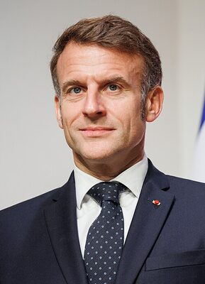
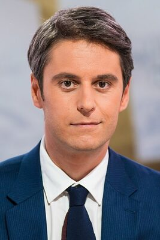

REN
Réforme des retraites pour assurer l'équilibre financier du système (64 ans)
Source : Programme présidentiel 2022 – en-marche.frObjectif plein emploi : taux de chômage sous 5% d'ici 2027
Source : Programme présidentiel 2022Développement du nucléaire civil : 6 nouveaux EPR2 et prolongation du parc
Source : Loi énergie-climat 2023Plan France 2030 : investissement dans les industries vertes et technologiques
Source : Plan France 2030 – gouvernement.frConstruction européenne renforcée : défense, économie, numérique, énergie
Source : Programme européen Renaissance 2024Baisse des impôts de production pour les entreprises françaises
Source : Loi de finances 2021-2024École : revalorisation des enseignants, choc des savoirs, groupes de niveau
Source : Programme éducation 2024Lutte contre l'immigration irrégulière, intégration par le travail et la langue
Source : Loi immigration 2024Investissement dans la santé, lutte contre les déserts médicaux
Source : Programme présidentiel 2022Réforme de l'État : simplification administrative et décentralisation
Source : Programme présidentiel 2022Fondé en avril 2016 par Emmanuel Macron, alors ministre de l'Économie du gouvernement Hollande, le mouvement En Marche ! rompt avec le clivage gauche-droite traditionnel. "Ni de gauche, ni de droite" : ce positionnement centriste inédit, qualifié par ses détracteurs de "en même temps", permet à Macron de remporter la présidentielle de 2017 au premier tour avec 24,01% des voix, puis l'élection face à Marine Le Pen avec 66,1%.
La République En Marche (LREM) balaie les législatives en obtenant 350 sièges, une majorité absolue historique. Le parti rassemble des transfuges de la gauche, du centre et de la droite modérée, incarnant une recomposition du champ politique. Rebaptisé Renaissance en mai 2022, il perd sa majorité absolue aux législatives de juin 2022 et gouverne depuis en minorité.
Le bilan macroniste est contesté : réforme du Code du travail, suppression de l'ISF, crise des Gilets Jaunes, réforme des retraites imposée par 49.3... mais aussi relance post-Covid, France 2030, réindustrialisation affichée et rôle actif dans la défense de l'Ukraine. Aux législatives 2024, après dissolution, Renaissance obtient 166 sièges derrière le NFP.

Énarque, banquier d'affaires chez Rothschild, ministre de l'Économie (2014-2016). Fondateur d'En Marche !, président depuis 2017. Réélu en 2022.
Photo : Nebojša Tejić · Public domain · Commons

Le plus jeune Premier ministre de la Ve République à 34 ans. Ancien porte-parole du gouvernement, ministre de l'Éducation. Incarne le renouveau du parti.
Polytechnicienne, ex-ministre du Travail. A porté la réforme des retraites. Première femme Premier ministre depuis Édith Cresson.
Photo : Benoît Granier · Licence Ouverte · Commons
| Thème | Position de Renaissance |
|---|---|
| Immigration | Lutte contre l'immigration irrégulière, intégration par le travail, européanisation de la politique migratoire |
| Économie | Libéralisme modéré, attractivité pour les investissements étrangers, baisse des impôts de production |
| Environnement | Pro-nucléaire et renouvelables, planification écologique, neutralité carbone 2050 |
| Europe | Fédéralisme européen, Europe puissance sur la scène mondiale, défense commune |
| Social | Retraite à 64 ans, activation des chômeurs, investissement dans la santé et l'éducation |
| Sécurité | Renforcement des moyens policiers, justice plus ferme, lutte contre la criminalité organisée |
| Institutions | Réforme constitutionnelle avortée, simplification administrative, décentralisation ciblée |
Programme officiel complet
parti-renaissance.fr — Programme et engagements